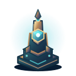
Штормовой шпиль
16 полноразмерных SVG, шесть вторичных накладок, все конечные кросс-пути. База: 1100 кредитов, 22 урона /1,2 с /200 пкс.
Базовая постройка
Ураган
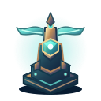
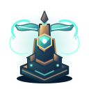
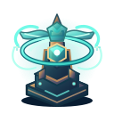
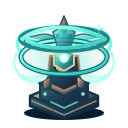
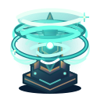
Громовержец
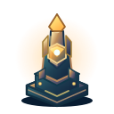
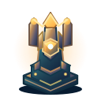
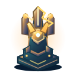
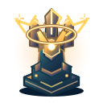
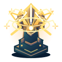
Ливень
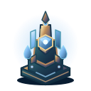
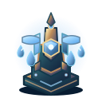
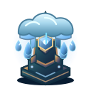
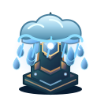
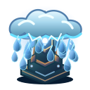
Все шесть кросс-путей 5–2–0
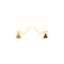
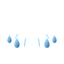
Вторичные накладки накладываются поверх ведущего T5. Все ресурсы локальные, соединение с сетью не требуется.